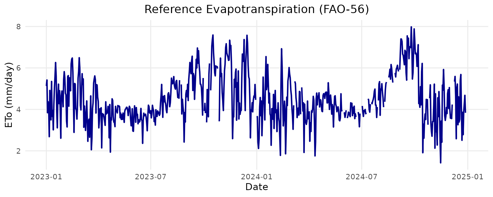

💧 ETo Calculation Based on FAO-56 Penman-Monteith
Source:vignettes/eto_pm_estimation.Rmd
eto_pm_estimation.Rmd🚀 Reference Evapotranspiration (ETo) Estimation
This article demonstrates how to use the BrazilMet package to compute reference evapotranspiration (ETo) based on the FAO-56 Penman-Monteith method, using weather data from INMET automatic stations.
🌍 View available INMET stations
Before downloading data, you can check the available weather stations with:
see_stations_info()
#> # A tibble: 564 × 8
#> station_municipality uf situation_operation latitude_degrees
#> <chr> <chr> <chr> <dbl>
#> 1 Abrolhos BA breakdown -18.0
#> 2 Acarau CE breakdown -3.12
#> 3 Afonso Claudio ES operating -20.1
#> 4 Agua Boa MT operating -14.0
#> 5 Agua Clara MS operating -20.4
#> 6 Aguas Emendadas DF operating -15.6
#> 7 Aguas Vermelhas MG operating -15.8
#> 8 Aimores MG operating -19.5
#> 9 Alegre ES operating -20.8
#> 10 Alegrete RS operating -29.7
#> # ℹ 554 more rows
#> # ℹ 4 more variables: longitude_degrees <dbl>, altitude_m <dbl>,
#> # operation_start_date <dttm>, station_code <chr>⬇️ Download daily weather data
Let’s download daily meteorological data for two stations between January 2023 and December 2024:
df <- download_AWS_INMET_daily(
stations = c("A001"),
start_date = "2023-01-01",
end_date = "2024-12-31"
)
#> Downloading data for: 2023
#> Downloading data for: 2024The resulting data frame includes temperature, solar radiation, wind speed, humidity, and atmospheric pressure
🧠 Calculate daily ETo using FAO-56
Now we use the daily_eto_FAO56() function to estimate daily ETo values:
df$eto <- daily_eto_FAO56(
lat = df$latitude_degrees,
tmin = df$tair_min_c,
tmax = df$tair_max_c,
tmean = df$tair_mean_c,
Rs = df$sr_mj_m2,
u2 = df$ws_2_m_s,
Patm = df$patm_mb,
RH_max = df$rh_max_porc,
RH_min = df$rh_min_porc,
z = df$altitude_m,
date = df$date
)📊 Plotting ETo results
Below is a basic line plot of daily ETo:
library(ggplot2)
ggplot(df, aes(x = as.Date(date), y = eto)) +
geom_line(color = "darkblue", size = 1) +
labs(
title = "Reference Evapotranspiration (FAO-56)",
x = "Date",
y = "ETo (mm/day)"
) +
theme_minimal(base_size = 14) +
theme(
plot.title = element_text(hjust = 0.5),
panel.grid.minor = element_blank()
)
#> Warning: Using `size` aesthetic for lines was deprecated in ggplot2 3.4.0.
#> ℹ Please use `linewidth` instead.
#> This warning is displayed once every 8 hours.
#> Call `lifecycle::last_lifecycle_warnings()` to see where this warning was
#> generated.
#> Warning: Removed 1 row containing missing values or values outside the scale range
#> (`geom_line()`).
✅ Summary
The BrazilMet package allows you to download official INMET weather data and compute ETo using the FAO-56 method in a reproducible and efficient way. This is essential for irrigation planning, crop modeling, and climate-based decision support.